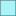

<!doctype html>
<html lang="en">
    <head>
        <meta charset="utf-8">
        <meta http-equiv="X-UA-Compatible" content="IE=edge">
        <meta name="viewport" content="initial-scale=1,user-scalable=no,maximum-scale=1,width=device-width">
        <meta name="mobile-web-app-capable" content="yes">
        <meta name="apple-mobile-web-app-capable" content="yes">
        <link rel="stylesheet" href="css/leaflet.css"><link rel="stylesheet" href="http://maxcdn.bootstrapcdn.com/font-awesome/4.6.1/css/font-awesome.min.css"><link rel="stylesheet" href="css/L.Control.Locate.min.css">
        <link rel="stylesheet" href="css/qgis2web.css">
        <link rel="stylesheet" href="css/MarkerCluster.css">
        <link rel="stylesheet" href="css/MarkerCluster.Default.css">
        <link rel="stylesheet" href="css/leaflet-search.css">
        <link rel="stylesheet" href="css/Control.OSMGeocoder.css">
        <style>
        html, body, #map {
            width: 100%;
            height: 100%;
            padding: 0;
            margin: 0;
        }
        </style>
        <title></title>
    </head>
    <body>
        <div id="map">
        </div>
        <script src="js/qgis2web_expressions.js"></script>
        <script src="js/leaflet.js"></script><script src="js/L.Control.Locate.min.js"></script>
        <script src="js/leaflet.rotatedMarker.js"></script>
        <script src="js/leaflet.pattern.js"></script>
        <script src="js/leaflet-hash.js"></script>
        <script src="js/Autolinker.min.js"></script>
        <script src="js/rbush.min.js"></script>
        <script src="js/labelgun.min.js"></script>
        <script src="js/labels.js"></script>
        <script src="js/Control.OSMGeocoder.js"></script>
        <script src="js/leaflet.markercluster.js"></script>
        <script src="js/leaflet-search.js"></script>
        <script src="data/prov_0.js"></script>
        <script src="data/GIS_1.js"></script>
        <script>
        var map = L.map('map', {
            zoomControl:true, maxZoom:28, minZoom:1
        }).fitBounds([[-5.04349059875,100.56637427],[-1.54207413125,107.69052271]]);
        var hash = new L.Hash(map);
        map.attributionControl.addAttribution('<a href="https://github.com/tomchadwin/qgis2web" target="_blank">qgis2web</a>');
        L.control.locate().addTo(map);
        var bounds_group = new L.featureGroup([]);
        var basemap0 = L.tileLayer('http://{s}.tile.openstreetmap.org/{z}/{x}/{y}.png', {
            attribution: '&copy; <a href="http://openstreetmap.org">OpenStreetMap</a> contributors,<a href="http://creativecommons.org/licenses/by-sa/2.0/">CC-BY-SA</a>',
            maxZoom: 28
        });
        basemap0.addTo(map);
        function setBounds() {
        }
        function pop_prov_0(feature, layer) {
            var popupContent = '<table>\
                    <tr>\
                        <td colspan="2">' + (feature.properties['NAME_0'] !== null ? Autolinker.link(String(feature.properties['NAME_0'])) : '') + '</td>\
                    </tr>\
                    <tr>\
                        <td colspan="2">' + (feature.properties['NAME_1'] !== null ? Autolinker.link(String(feature.properties['NAME_1'])) : '') + '</td>\
                    </tr>\
                    <tr>\
                        <td colspan="2">' + (feature.properties['KODE'] !== null ? Autolinker.link(String(feature.properties['KODE'])) : '') + '</td>\
                    </tr>\
                </table>';
            layer.bindPopup(popupContent, {maxHeight: 400});
        }

        function style_prov_0_0() {
            return {
                pane: 'pane_prov_0',
                opacity: 1,
                color: 'rgba(0,0,0,0.396078431373)',
                dashArray: '',
                lineCap: 'butt',
                lineJoin: 'miter',
                weight: 1.0, 
                fill: true,
                fillOpacity: 1,
                fillColor: 'rgba(38,230,240,0.396078431373)',
            }
        }
        map.createPane('pane_prov_0');
        map.getPane('pane_prov_0').style.zIndex = 400;
        map.getPane('pane_prov_0').style['mix-blend-mode'] = 'normal';
        var layer_prov_0 = new L.geoJson(json_prov_0, {
            attribution: '<a href=""></a>',
            pane: 'pane_prov_0',
            onEachFeature: pop_prov_0,
            style: style_prov_0_0,
        });
        bounds_group.addLayer(layer_prov_0);
        map.addLayer(layer_prov_0);
        function pop_GIS_1(feature, layer) {
            var popupContent = '<table>\
                    <tr>\
                        <td colspan="2">' + (feature.properties['Gambar'] !== null ? '' : '') + '</td>\
                    </tr>\
                    <tr>\
                        <td colspan="2">' + (feature.properties['Nama'] !== null ? Autolinker.link(String(feature.properties['Nama'])) : '') + '</td>\
                    </tr>\
                    <tr>\
                        <td colspan="2">' + (feature.properties['Alamat'] !== null ? Autolinker.link(String(feature.properties['Alamat'])) : '') + '</td>\
                    </tr>\
                    <tr>\
                        <td colspan="2">' + (feature.properties['Keterangan'] !== null ? Autolinker.link(String(feature.properties['Keterangan'])) : '') + '</td>\
                    </tr>\
                    <tr>\
                        <td colspan="2">' + (feature.properties['Latitude'] !== null ? Autolinker.link(String(feature.properties['Latitude'])) : '') + '</td>\
                    </tr>\
                    <tr>\
                        <td colspan="2">' + (feature.properties['Longitude'] !== null ? Autolinker.link(String(feature.properties['Longitude'])) : '') + '</td>\
                    </tr>\
                </table>';
            layer.bindPopup(popupContent, {maxHeight: 400});
        }

        function style_GIS_1_0() {
            return {
                pane: 'pane_GIS_1',
                radius: 4.0,
                opacity: 1,
                color: 'rgba(0,0,0,1.0)',
                dashArray: '',
                lineCap: 'butt',
                lineJoin: 'miter',
                weight: 1,
                fill: true,
                fillOpacity: 1,
                fillColor: 'rgba(202,7,95,1.0)',
            }
        }
        map.createPane('pane_GIS_1');
        map.getPane('pane_GIS_1').style.zIndex = 401;
        map.getPane('pane_GIS_1').style['mix-blend-mode'] = 'normal';
        var layer_GIS_1 = new L.geoJson(json_GIS_1, {
            attribution: '<a href=""></a>',
            pane: 'pane_GIS_1',
            onEachFeature: pop_GIS_1,
            pointToLayer: function (feature, latlng) {
                var context = {
                    feature: feature,
                    variables: {}
                };
                return L.circleMarker(latlng, style_GIS_1_0(feature));
            },
        });
        var cluster_GIS_1 = new L.MarkerClusterGroup({showCoverageOnHover: false,
            spiderfyDistanceMultiplier: 2});
        cluster_GIS_1.addLayer(layer_GIS_1);

        bounds_group.addLayer(layer_GIS_1);
        cluster_GIS_1.addTo(map);
        var osmGeocoder = new L.Control.OSMGeocoder({
            collapsed: false,
            position: 'topright',
            text: 'Search',
        });
        osmGeocoder.addTo(map);
        var baseMaps = {};
        L.control.layers(baseMaps,{' GIS': cluster_GIS_1,' prov': layer_prov_0,}).addTo(map);
        setBounds();
        var i = 0;
        layer_prov_0.eachLayer(function(layer) {
            var context = {
                feature: layer.feature,
                variables: {}
            };
            layer.bindTooltip((layer.feature.properties['NAME_1'] !== null?String('<div style="color: #000000; font-size: 8pt; font-family: \'MS Shell Dlg 2\', sans-serif;">' + layer.feature.properties['NAME_1']) + '</div>':''), {permanent: true, offset: [-0, -16], className: 'css_prov_0'});
            labels.push(layer);
            totalMarkers += 1;
              layer.added = true;
              addLabel(layer, i);
              i++;
        });
        map.addControl(new L.Control.Search({
            layer: cluster_GIS_1,
            initial: false,
            hideMarkerOnCollapse: true,
            propertyName: 'Nama'}));
        resetLabels([layer_prov_0]);
        map.on("zoomend", function(){
            resetLabels([layer_prov_0]);
        });
        map.on("layeradd", function(){
            resetLabels([layer_prov_0]);
        });
        map.on("layerremove", function(){
            resetLabels([layer_prov_0]);
        });
        </script>
    </body>
</html>
